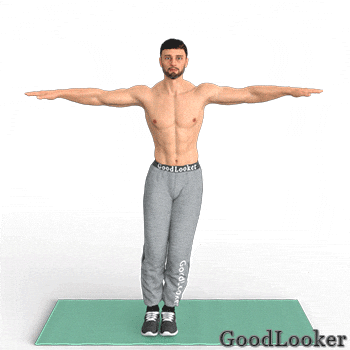

Ноги поставлены рядом друг с другом. Руки вытянуты вперед, ладони прижаты друг к другу. На счет «раз» сделайте прыжок, расставляя нижние конечности шире плеч. Руки разводятся в противоположные стороны. На счет «два» совершите обратный прыжок, возвращая положение в исходную фазу. Найдите свой темп выполнения, чтобы избежать перегрузок сердечно-сосудистой системы и головокружения. Элемент повышает выносливость атлета, сжигает жир в области живота, а также воздействует на задние дельты, приводящие мышцы бедер.
Сколько выполнять: 20 повторений.
Сведите ладони на затылке, развернув локти в противоположные стороны. Расставьте ноги по линии ключиц. Совершите классический присед, удерживая спину в ровном положении. Затем встаньте, поднимите правое колено и коснитесь его левым локтем, выполнив скручивание исключительно силой брюшных мышц. Далее — очередной присед, после которого скручивание делается со сменой сторон. Упражнение развивает мышцы живота, задействуя при этом мускулатуру нижних конечностей. За счет этого похудение происходит быстрее, а мышцы набирают объем, становятся рельефнее.
Сколько выполнять: по 10 скручиваний на каждую сторону (всего 20 приседаний).
Примите Т-образную позу, поставив ноги почти вплотную друг к другу. Упражнение для похудения в животе заключается в выполнении низкоамплитудных прыжков из стороны в сторону. На каждый прыжок руки сгибаются и разгибаются в локтевом суставе. Элемент активно сжигает подкожный жир, сосредотачивая нагрузку в области пояса. За счет дополнительной работы рук укрепляются бицепсы и трицепсы.
Сколько выполнять: 30 разгибаний рук.

Примите упор лежа, аналогично началу классических отжиманий. Уверенно зафиксируйте положение туловища, избегая сутулости в спине. После этого начинайте поочередно поднимать колени к груди, представляя, будто интенсивно карабкаетесь по отвесной поверхности. Элемент держит в напряжении все тело, но основная нагрузка приходится на нижнюю часть живота и квадрицепсы. Один из наиболее эффективных элементов в вопросах жиросжигания.
Сколько выполнять: по 20 подтягиваний колена на каждую сторону (всего 40).
Лягте животом на гимнастический коврик и вытяните все тело вдоль. После этого приподнимите корпус, устремив взгляд четко перед собой. Из вытянутого положения руки необходимо согнуть так, будто выполняете подъем на перекладине (подтягивание). Локти опускаются до линии пояса, после чего возвращаются в стартовую фазу. Таким образом, нагрузка приходится на поясницу, широчайшую мышцу спины, а также верхнюю часть пресса.
Сколько выполнять: 20 повторений.

Лягте спиной на коврик и вытяните ноги вверх так, чтобы они образовали прямой угол с корпусом. Удерживайте положение ровно, избегая перекосов туловища. После этого начните тянуться ладонями к стопам, полагаясь исключительно на силу мышц пресса. Подобное движение оказывает колоссальный эффект на брюшную мускулатуру, сочетая в себе статическую и динамическую нагрузку. Такой вариант скручиваний поможет убрать живот значительно быстрее.
Сколько выполнять: 15 повторений.

Представленный элемент тренировки для похудения мужчинам сочетает одновременное нанесение ударов перед собой, а также бег с подъемом коленей. Колени поднимаются на умеренную высоту. Торопиться в ходе работы не нужно, достаточно поймать комфортный для себя темп. Тем не менее, чем он выше — тем активнее стимулируются жиросжигающие процессы. Основная нагрузка приходится на нижнюю область пресса, укрепляются руки и ноги, развивается координация движений.
Сколько выполнять: по 20 ударов рукой на каждую сторону (всего 40).

Сначала примите положение планки на руках, после чего подпрыгивайте ближе к рукам, вставайте и делайте прыжок, стараясь вытянуть все тело как можно выше. Далее вновь вернитесь в положение планки и коснитесь ладонью разноименного колена, стыкуя их в области живота. Сначала подтяните вперед правое колено, затем левое. Перекрестные касания оказывают акцентированный эффект на косые мышцы живота, а сами берпи считаются одним из лучших упражнений для похудения.
Сколько выполнять: 10 берпи.

Встаньте и поднимите руки над собой, положив одну ладонь на другую. Перенесите вес туловища на правую ногу, после чего поднимите левое колено, совершая небольшое подпрыгивание. Одновременно с этим опускаются руки, соединяясь с коленом. Помимо развития нижней части пресса дополнительный эффект оказывается на икроножные мышцы опорной ноги и дельты. Если вам тяжело подпрыгивать, то можете выполнять обычное подтягивание колена к животу. Целый подход выполняйте на одну ногу, затем поменяйте сторону.
Сколько выполнять: 20 подтягиваний колена, затем на другую сторону.
Сядьте на коврик, упершись в него полными стопами и ладонями. Таз оторвите от пола, удерживая вес туловища на четырех конечностях. Ваша задача — подтянуть колено ближе к верху груди, одновременно касаясь стопы противоположной рукой. При каждом новом повторении стороны меняются. Торопиться в ходе работы не нужно. Старайтесь удерживать хороший баланс, а также сосредотачивать нагрузку в брюшных мышцах. Элемент помогает не только убрать живот, но и развить координацию и нейромышечную связь атлета.
Сколько выполнять: по 10 подтягиваний колена на каждую сторону (всего 20 подтягиваний).
Лежа на полу, сведите ладони за головой с развернутыми локтями, а также установите согнутые в коленном суставе ноги на пол. Движение простое. Одновременно поднимайте ноги и корпус, стараясь коснуться локтями и коленями в области верхней части пресса. После небольшой паузы вернитесь в стартовую фазу. Упражнение быстро помогает похудеть в животе мужчине, не оказывая при этом лишней нагрузки на другие мышечные группы.
Сколько выполнять: 15 повторений.

Главным аспектом представленного упражнения является то, что положение на четвереньках удерживается не на коленях, а на носках. В спине при этом соблюдается естественный прогиб, взгляд четко направлен перед собой. Зафиксировав положение, коснитесь левой ладонью правого плеча, после чего правой ладонью левого. Тело при этом не должно перекашиваться. Чем быстрее вы сменяете руки, тем интенсивнее сжигаются калории. Благодаря этому упражнению оказывается статическая нагрузка на пресс, спину, руки и икроножные мышцы.
Сколько выполнять: по 15 подтягиваний рук на каждую сторону (всего 30 подтягиваний).
Не забудьте повторить упражнения в 2 круга (продвинутые могут сделать 3 круга).